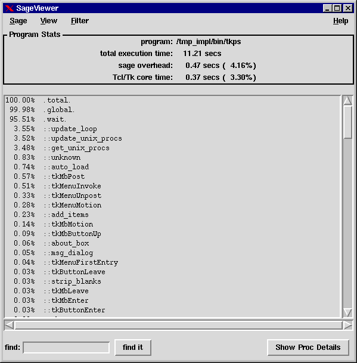
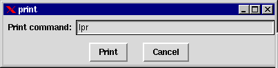
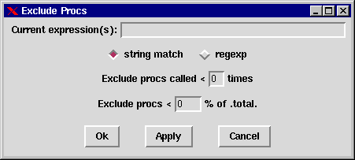

Sage
version 1.0
Quick Links
Introduction
Sage is an analysis tool for measuring performance of Tcl/Tk scripts, much
like a profiler. It can be used to detect where performance bottlenecks
are occurring.
Currently, the lowest resolution of analysis is at the proc level, with
a few special scopes, such as global. What this means is that timing information
is collected only for procs and not individual statements (this may come
in a later release).
Sage is actually composed of two tools: the sage tool runs your
scripts and collects the data. The sageview tool displays your data.
Type Of Data Collected
The list below shows what type of data is collected when you run your scripts
through sage:
-
total execution time of script
-
total time spent in sage data collection overhead
-
total time spent in Tcl/Tk core commands and procs
-
total time spent in your procs
-
total time spent in wait loops
-
total time spent in global scope
-
for each proc:
-
number of calls made to proc
-
total time spent in proc
-
total time spent in proc and its descendents
Ways to Display the Data
Once the data is collected, there are a few ways of displaying it using
sageview, as shown in this list:
-
time in clicks
-
time in seconds
-
time as a percentage of total run time
-
a variety of precisions, ranging from 0 to 5 digits to the right of the
decimal place
Running Sage
In order to collect the timing data for your script, you must run it through
sage. sage is a Tcl script that sets up the environment to
instrument your procs as they are defined to make proc entry and exit callbacks
to the sage code.
The syntax for sage is:
sage ?options? script ?script options?
script is the Tcl/Tk script you want to run and collect
data for, and script options are the options you would
normally give when you run it.
Sage assumes the standard tclsh interpreter (or wish if you supply the
-w option to sage), so if you need to run your script with a custom built
interpreter or a different version of the interpreter, then you can use
this syntax:
interpreter full_path_to_sage ?options? script ?script options?
If your custom interpreter does not support this syntax, then you will
have to do some tinkering to get it to work.
Sage options
You can modify the way sage operates via options:
-d | -data outfile
By default, sage sends its data to the file ./sage.out.
You can override this with this option. Set outfile to
the output file you wish the sage data to go.
-w
Wish flag. When this is set, sage assumes your script needs
the wish interpreter, so it does a "package require Tk" to load
it in. Note that some installations are not properly set up to support
loading Tk from tclsh. If yours is not set up for this, you will have to
use the second syntax shown above. Either way, you should use the -w flag
because it also tells sage to do some special handling for event
loops.
-c
Core procs flag. This flag tells sage to redefine pre-existing
procs so that data can be collected on them too. This handles those procs
that are loaded automatically by the interpreter before sage is loaded,
such as the multitude of Tk procs in the Tk lib directory. Without this
flag, no data is collected for these procs.
-sv
Sage viewer flag. With this option, sage will automatically invoke
the sageview tool on the collected data when the script is complete. The
default action is to exit when the script is done, and you will have to
invoke the sage viewer manually.
Sage should run your script without any side effects other than
being a little slower while it collects the data. When your script is complete,
sage will dump out the collected data to the file sage.out
(or a file specified via the -d option). If the -sv option
was specified, then it will start up the sage viewer. Then sage exits.
Running the Sage Viewer
In order to view the collected data, you use the sageview tool.
sageview can be started automatically when sage is complete
by using the -sv option on sage, or you can start it up manually
with the following syntax:
sageview ?options?
sageview Options
-d | -data infile
By default sageview looks for the file ./sage.out. If it was
placed somewhere else or with a different name, then use this option to
override the default.
-rc initfile
By default, sageview reads configuration information from a
file called .sagerc (or sage.ini on Windows) in your
home directory. Using this option can override this to read some other
file. You can also prevent any rc file from being read in by simply setting
initfile to "".
An Example Session
This describes a sample session profiling the tkps utility written by Henry
Minsky. The data was collected using this command line:
sage -w -c `which tkps`
While tkps was running, I clicked a few buttons, then exited. The sage
viewer was brought up like this:
sageview
which brings up the following window:

The status box
Below the menu bar is a status box. This displays the following information:
-
The program whose data you are currently analyzing, and arguments passed
to it during its run
-
The total execution time. This time includes everything for the sample
run, except:
-
the time taken to load the interpreter
-
the time taken to load the sage code
-
the time taken to save the sage data
-
Sage overhead time. Sage keeps track of the time it spends instrumenting
procs and collecting data. The value in the parentheses is the percentage
of the total execution time that is sage data collection overhead.
-
Total time spent in Tcl/Tk core. This is not a measured value, but a calculated
value, and its value should be viewed with a grain of salt. It really is
just the unaccounted for time. See the section How
the Data is Figured for more information.
The proc listbox
This listbox contains the list of procs of your script in descending order.
The sorting depends on what the data is you're viewing. The procs are fully
qualified with their namespaces.
There are a couple special entries that show up in this listbox:
-
.total. This is the total time spent in your procs.
-
.global. This is the total time spent in the global scope; ie
Tcl/Tk code not inside a proc.
-
.wait. This is the total time spent waiting. This is calculated
by keeping track of how much time is spent inside the tkwait and
vwait commands.
Searching for text
Below the listbox is an entry box for searching for text in the listbox.
Type in the text you want to search for and hit enter or hit the "find
it" button. The search starts from where the current selection is, or from
the top if there is no selection. Hit "find it" again and it will keep
searching through the list until it cannot find any more matches.
Showing proc detail
(This feature is not available in version 1.0)
You can select a proc in the list and hit the Show Proc Details button
(or double click in the listbox) and this will bring up a new window with
deatils on the selected proc. More details will follow when the feature
is completed.
The Menu Bar
The following functions are available on the menu bar.
Sage Menu Button
Print...

Brings up a dialog for printing the data. The printer command
must be able to get its input from standard in. The data printed is whatever
is in the Proc Listbox. Therefore, set up the data viewed, units, and filters
first.
Exit
Exits the sage data viewer. The data file is still there and can be
brought up again.
View Menu Button
Data
Proc time
Displays the total time spent in each proc.
Proc time & descendants
Displays the total spent in each proc plus the time spent in its descendants.
Number of calls
Displays the number of times each proc was called.
Include .wait. in calculations
This is a checkbutton which tells sage to include the time spent in
a wait loop in all the time calculations or not.
Units
Clicks
Displays time data in clicks.
Seconds
Displays time data in seconds.
% of .total.
Displays time data as a percentage of the value in .total.
Precision
This allows you to change the precision of the seconds and percentage
time displays, from 0 to 5 places to the right of the decimal.
Save Settings
Various settings can be saved in the rc file. Here are the items currently
saved:
-
data to view (proc time, proc time & descendants, or number of calls)
-
units to view time data (clicks, seconds, or percentage)
-
precision (0 to 5 decimal places)
-
inclusion and exclusion filters
-
the print command
-
the toplevel window geometry
The next time you start up sageview, these settings will be read
in.
Filter Menu Button
Include Procs...
This allows you to create filters to show only specific procs. The
default is *, which means show all procs. The expression is a space delimited
list of string match or regexp expressions that, if true,
will cause a proc to be displayed.
For instance, if you want to only see the Tk procs from the run, enter
an expression of ::tk*.
Exclude Procs...

You can also specify filters to exclude procs from being displayed.
The expression list is the same as it is for the include procs, except
that if there is any match in the list of expressions for a proc, it will
not be displayed.
The exclude procs called < xx times allows you to
not display procs that are called fewer than a specified minimum number
of times.
The exclude procs < xx % of .total. allows you to
exclude procs whose percentages are less than the specified minimum.
Note: The include filters are applied first, then the exclude filters
are applied to the results of the include filters.
Help Menu Button
About...
Displays the version number and warranty information.
Users Guide
(Note: not yet implemented) Brings up this user's guide in a
window.
How the Data is Figured
Sage data is collected with the aid of two stop watches: one watch to time
the execution of your script, and another to time the sage data collection
code. Depending on which code is running determines which stop watch is
ticking away.
The only computed time value is the Tcl/Tk core time. This is computed
via the formula:
core time = absolute execution time - total proc time (.total.) - sage
overhead time.
Theoretically, this calculated time should be accurate. Unfortunately,
there are some latency issues. The two stop watches should be stopped and
started atomically, but they aren't. For long running scripts, these latency
times tend to creep into the time values, making the proc total time too
large and the sage overhead too small.
But although the timing isn't perfect, all procs are timed in the same
manner, so the percentages of .total. should be fairly accurate. I will
continue to improve the timing accuracy and lower the latency.